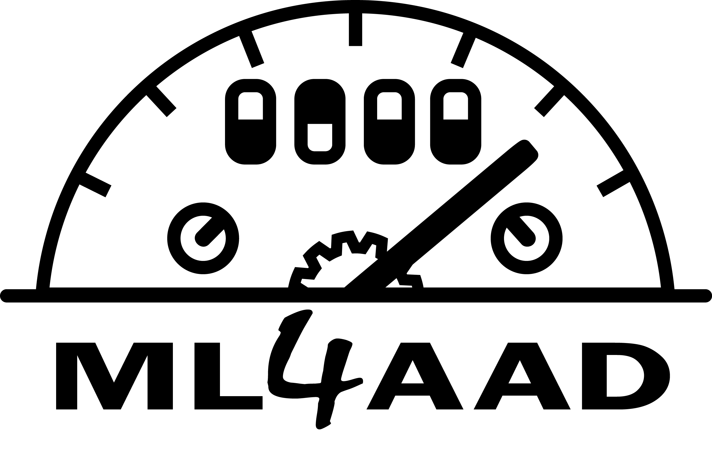
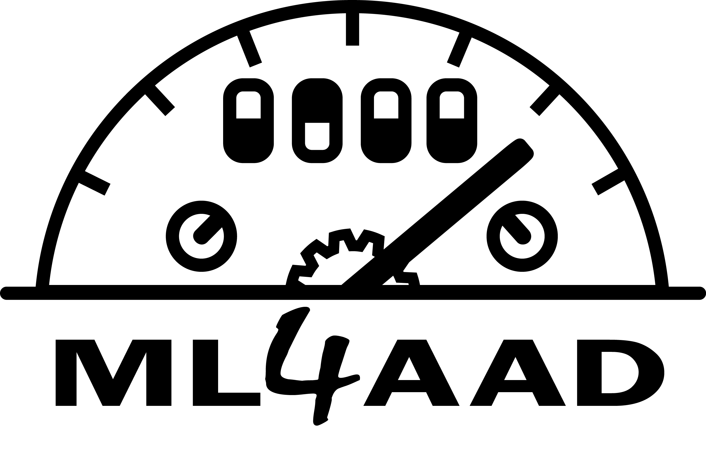
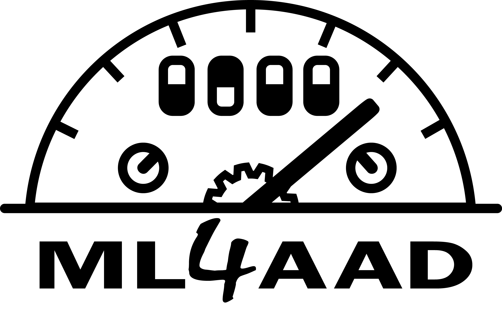
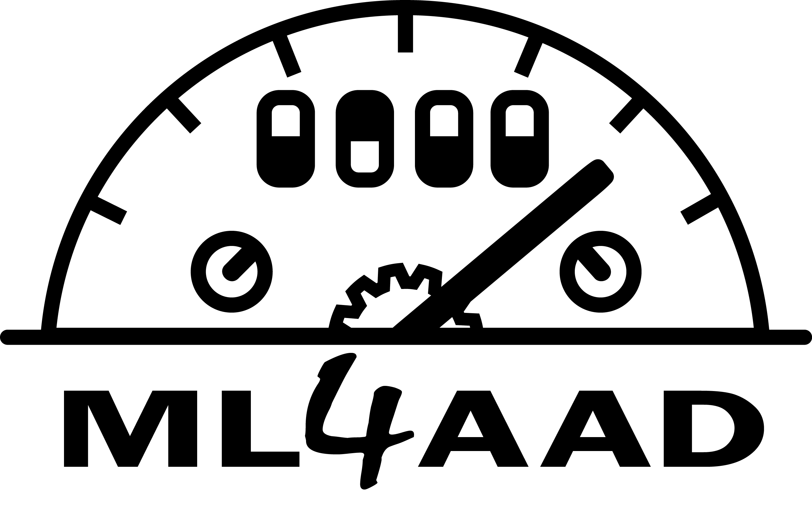

Meta data, i.e. number of instances and parameters as well as configuration budget. Statistics apply to the best run, if multiple configurator runs are compared. The p-value of the paired permutation test uses 10000 permutations and tests against the null-hypothesis that the mean of performance between default and incumbent is equal.
| Run with best incumbent | run_1 | Cutoff | 5 |
| # Train instances | 10 | Walltime budget | 50 |
| # Test instances | 10 | Runcount budget | inf |
| # Parameters | 7 | CPU budget | inf |
| # Features | 4 | Deterministic | False |
| # Duplicate Feature vectors | 0 | ||
| # Evaluated Configurations | 35 | # Runs per Config (min) | 1 |
| # Default evaluations | 17 | # Runs per Config (mean) | 5.68571 |
| # Incumbent evaluations | 35 | # Runs per Config (max) | 35 |
| Budget spent evaluating configurations | 0.635322 | Total number of configuration runs | 199 |
| p-value of paired permutation test | 0.02600 | ||
| p-value of paired t-test | 0.13183 |
Comparing parameters of default and incumbent. Parameters that differ from default to incumbent are presented first.
| Default | Incumbent | |
|---|---|---|
| -------------- Changed parameters: -------------- | ----- | ----- |
| sp-first-restart | 100 | 159 |
| sp-learned-size-factor | 0.4 | 0.321027 |
| sp-restart-inc | 1.5 | 1.49359 |
| sp-var-dec-heur | 0 | 19 |
| sp-variable-decay | 1.4 | 1.80037 |
| -------------- Unchanged parameters: -------------- | ----- | ----- |
| sp-rand-phase-dec-freq | 0.001 | 0.001 |
Contains different ways of analyzing the final incumbent and the performance of the algorithm's default parameter configuration.
The most common way to compare performances of algorithms on the same set of instances. Entries in the table depend on the cost metric of the configurator run. For scenarios optimizing running time, this includes average runtime, penalized average runtime as well as number of timeouts.
| Train | Test | |||
|---|---|---|---|---|
| Default | Incumbent | Default | Incumbent | |
| PAR10 | 0.015 | 0.013 | 0.011 | 0.01 |
| PAR1 | 0.015 | 0.013 | 0.011 | 0.01 |
| Timeouts | 0/10 | 0/10 | 0/10 | 0/10 |